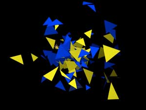

Shading tab> Shadowlet Settings group
The Shadowlet Setting group provides a soft self-shadowing for the particle volume. Shadowlets create a shadow off the main light. You can imagine it as a projected shadow — a volumetric, cone-shaded simulation of the shadow from each particle as created from the light's perspective.
Why use a Shadowlet? Let's say your project has a lot of particles. Realistically, the center of that particle cluster would be obscured by all of the particles around them. You will not want the clustered mass in the center to be brightly reflected. The Shadowlet takes care of this issue and adds to the believability of the scene.
How it works: If you move a Light, you will see that the shadow it creates reacts to the Shadowlet input. If you rotate the project to look from behind or at another angle, you will see the Shadowlet stays in its central location but its shading shifts with the camera angle. Read our tutorial 'How to Use a Shadowlet' at the bottom of this page, including our discussion of a smoke particle style called 'smoklet'.
The Shadowlet Settings group.
Shadowlet for Main
Turns the Shadowlet calculation on/off. It enables self-shadowing for particles in the main system. Set to Off by default. Choose On to get the appearance of particles casting shadows. This happens as Particular recognizes the Shadowlet light.
Left to right, Shadowlet for Main turned Off and On.
Shadowlet for Aux
Turns the Shadowlet calculation on/off for the Aux particles only. It enable self-shadowing for particles in the Aux System. Set to Off by default. Choose On to control shadowing for the Aux particles separate from the main particles. Aux is an auxiliary particle system that lets the main particles emit their own particles.
Color
Color controls the color of the Shadowlet's shadow. Darker colors are most appropriate for the shadow color such as black or dark brown. Pick a color that corresponds to the darker parts of the scene. If you have a colored background or if the scene has a tint, the default gray color of the shading generally may make the particles look out of place. Color lets you choose a color that makes the Shadowlet shading blend into the background of the scene.
Left to right, the Shadowlet Color is set to black (the default) and a brighter blue.
Color Strength
The Color Strength controls how strong the RGB is weighted in against the particle color when computing the Shadowlet shadow. Strength sets how the shadowlet Color is blended with the original color of the particle. Set to 100 by default this gives the shadow color full contribution to particles in the shadows area. Lower values will make the shadow color appear to blend less with the particles color.
Some particles do not have a defined color, such as Sprite and Textured Polygon. In such cases, Color Strength should always be at 100. All other particles types, like Sprite Colorize/Fill and Textured Polygon Colorize/Fill have a well-defined color.
Left to right, Color Strength is high and low. Color is set to blue.
Opacity
This control sets the opacity of the Shadowlet shadow, which controls how strong the shading is. Default value is 5. Opacity should typically have a low setting, between 1 and 15 when using Sprite or Textured Polygon particle types otherwise the particles in shadow may appear black.
You can increase the value to crank up the opacity of the shading. In some cases higher values can work, for example, if particles are very spread apart. But in many cases, particles will be fairly densely packed and in these cases a low value should be used so the shadow does not appear too dark.
Adjust Size
The Adjust Size value sets the overall coverage of the Shadowlet area. The default value is 100. High values give greater coverage, while lower values create a smaller shadow volume.
Left to right, Adjust Size is set to low and high values.
Adjust Distance
The Adjust Distance value is the distance in pixels the Shadowlet volume appears from the Shadow Light. This control is set to 100 by default. Lower values place the Shadowlet closer to the Light and therefore the shadow appears darker. Higher values move the Shadowlet farther away from the light source and the shadowlet effect becomes less noticeable.
It is useful to set Distance to 0 initially if you have multiple Lights and you don't know which one to set as the main shadow-casting light.

Left to right, Adjust Distance control set to a low and high value.
Placement
Placement controls where the Shadowlet is positioned in 3D space relative to the particles.
There are four options:
• Auto is the default option. This lets Particular decide the best position setting relative to the particles and shadow casting lights.
• Project positions the Shadowlet at a depth that depends on the 'Shadow' Light position.
• Always Behind renders the Shadowlet shadow behind the particles in the scene. This setting is useful if the Auto setting causes noticeable flickering.
• Always in Front positions the Shadowlet in front of the particle. This setting is also useful if the Auto setting causes unwanted flickering. Since the shadow is always in front, it can give a greater sense of depth to the particles.
Shadowlet Position x, y, z
The position in 3D space where Shadowlets are placed. These values can be keyframed over time.
Tutorial: How to Use a Shadowlet
Let's look at how to use a Shadowlet. First, apply the Particular node with its default settings. Then change its settings to the following:
Emitter tab:
Emitter Type = Sphere
Particles/sec = 200
Velocity random = 30
Emitter Size XYZ = 10 x 10 x 10
Here is what you will see:
Particle tab:
Life = 1 sec
Life Random = 50%
Particle Type = Cloudlet
Particle Feather = 100
Size = 20
Size Random = 50%
Opacity = 30
Here is what you will see:
Shading tab:
Shadowlet for Main = On
Shadowlet> Color Strength = 70
Shadowlet> Opacity = 90
Here is what you will see:
Graph Mode:
Opacity Over Life graph
Choose the second preset
Here is what you will see:
Physics tab:
Air tab> Air Resistance = 2
If you change the color of the shadowlet, you can better see the result of our changes.
Here is what you will see:
Shadowlet Position:
To control the position of the shadowlet, change the Shadowlet Position properties. By default, the shadowlet is directly in front of the Emitter (0 point of the axes). If you have a 3D scene, you can add a 3D Axis node and link via expressions to control the position of the shadowlet.
Create a 'smokelet' particle:
If you use the Cloudlet Particle Type with the Shadowlet Settings group, you can create an interesting type of particle that we call a 'smokelet'. The smokelet adds realism when you are creating a smoke particle trail.
To do so, open the Particle tab, go to the Particle Type pop-up, and choose Cloudlet. All the settings for the smokelet are in the Shadowlet Settings group. For instance, change the Color to tint the smoke. The Color Strength will affect the saturation of the smokelet color, making the color tint appear more or less gray. Opacity controls how opaque the shadow appears. In our example above, we have set Color to green, Color Strength to 60 and Opacity to 100. This makes the smokelet a little darker and more subtle. NOTE: The shadowing is most apparent if the light source, like a Point Light node, is placed behind the lit particles.
Here is what you will see: